Tour du Mont Blanc
Walk the classic loop around Mont Blanc through three countries.
Tour du Mont Blanc runs 170 km through France/Italy/Switzerland and finishes at Les Houches. The first landmark is Les Houches. At 5,000 steps a day it's about 7 weeks of the walking you do anyway. All 20 landmarks are below, in walking order, with a photograph and the story of the place.
- 170km end to end
- 20landmarks
- 7 weeksat 5,000 steps a day
- Les Houchesfinishes at

The landmarks of Tour du Mont Blanc
20 landmarks, in walking order. Each photograph is by the person credited beneath it, used as they licensed it.
-
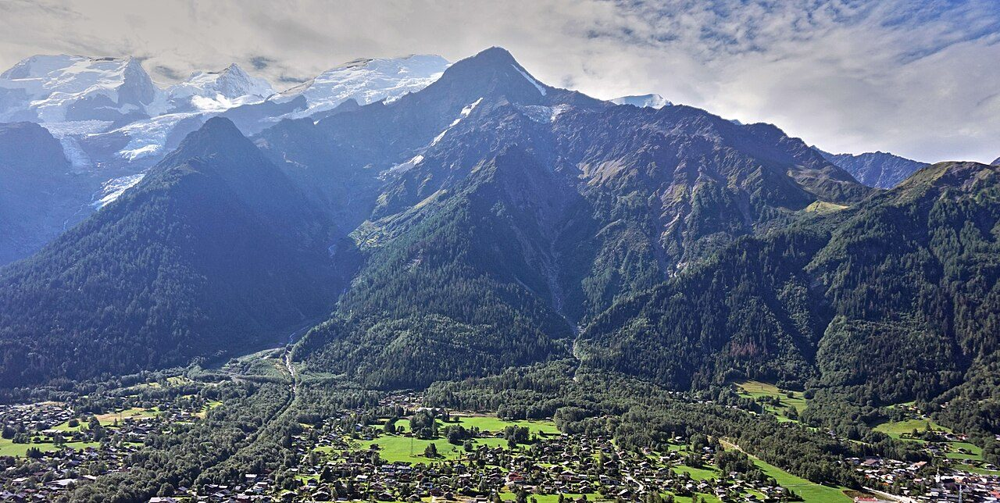
Photo: Tiia Monto · Wikimedia Commons, CC BY-SA 3.0 Les Houches
At 1,007 metres the valley floor holds the morning shade while the Bellevue cable car hums toward the ridge above. Les Houches, below Chamonix, is the traditional start of the great loop around the Mont Blanc massif — 170 kilometres, three countries, one mountain. The summit itself, 4,808 metres, stays hidden behind nearer peaks, and the classic route runs anticlockwise.
-
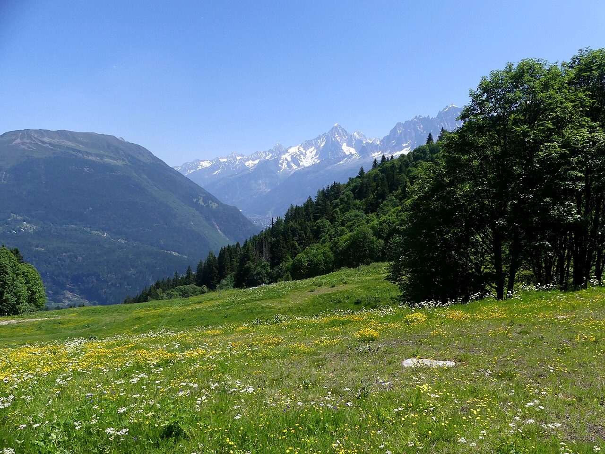
Photo: Florian Pépellin · Wikimedia Commons, CC BY-SA 4.0 Col de Voza
The climb out of the valley tops out at 1,653 metres, where the little Tramway du Mont-Blanc clatters across the saddle on its way to the Nid d'Aigle. The Chamonix valley falls away to the north; ahead, the Bionnassay glacier hangs white above the Montjoie. From the col a café serves the first of many coffees before the path drops toward Les Contamines.
-
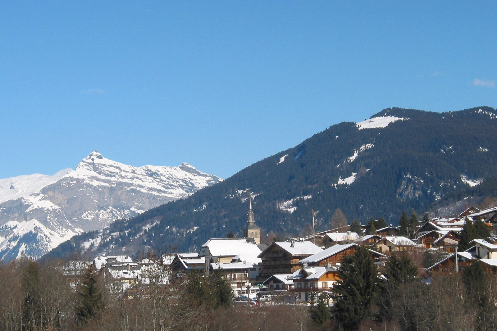
Photo: Jean-Pol GRANDMONT · Wikipedia, CC BY 3.0 Les Contamines-Montjoie
Woodsmoke and cut hay drift up from Les Contamines-Montjoie, strung along the Bon Nant river at 1,164 metres. This is the last true town before the high passes, so packs grow heavy with bread and cheese from the village shops. Paragliders spiral over the Montjoie valley in the afternoon thermals. Tomorrow the trail leaves the trees for good.
-
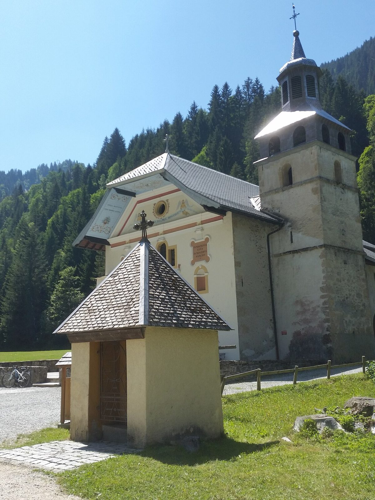
Photo: Pierre73 · Wikimedia Commons, CC BY-SA 4.0 Notre-Dame de la Gorge
Where the valley narrows to a wooded gorge stands a small baroque church, rebuilt in 1699 and still a place of pilgrimage. Notre-Dame de la Gorge glows with gilt and painted saints inside its plain stone shell. Beyond it the old road climbs in worn cobbles beside a roaring torrent, past the Pont Romain, into the mountains proper. Feet have walked this stone for centuries.
-
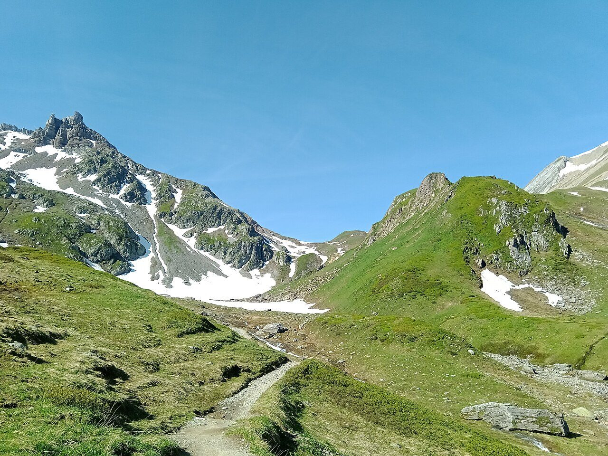
Photo: Rémih · Wikimedia Commons, CC BY-SA 4.0 Col du Bonhomme
Above the tree line the path grinds up bare slopes to the Col du Bonhomme, 2,329 metres. Cloud snags on the cairn that marks it; even in July, old snow lingers in the gullies. Weather turns fast up here, and a stone refuge below offers shelter when it does. The 'good man' of the name is a rock pillar, watching walkers pass.
-
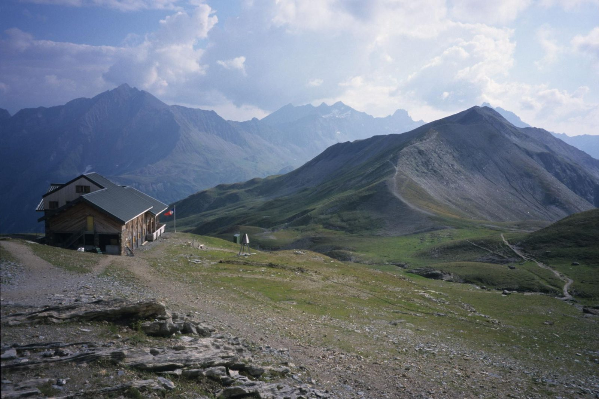
Photo: Touriste · Wikipedia, Public domain Col de la Croix du Bonhomme
Barely an hour on, the trail climbs higher still to the Col de la Croix du Bonhomme at 2,479 metres — the true high point of the two passes. A refuge crouches just below the col, often the first night's stop. Ridgelines fold away in every direction, grey and treeless. Marmots whistle from the scree. Below begins the long descent to Les Chapieux.
-
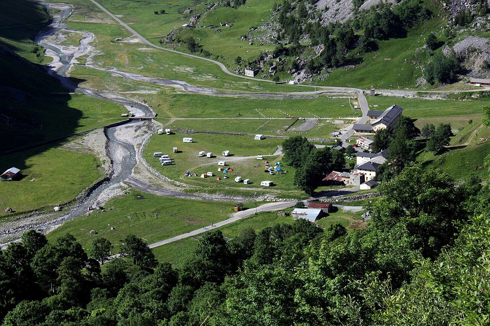
Photo: Tobias1984 · Wikimedia Commons, CC BY-SA 3.0 Les Chapieux
A cluster of farm buildings and a single auberge fill the green cradle of Les Chapieux at 1,554 metres, deep in the Vallée des Glaciers. Cows graze the flats; a maker sells Beaufort from the valley's own milk. Once a military post guarded this hidden basin. It's a quiet place to gather strength — ahead lie the border and Italy.
-
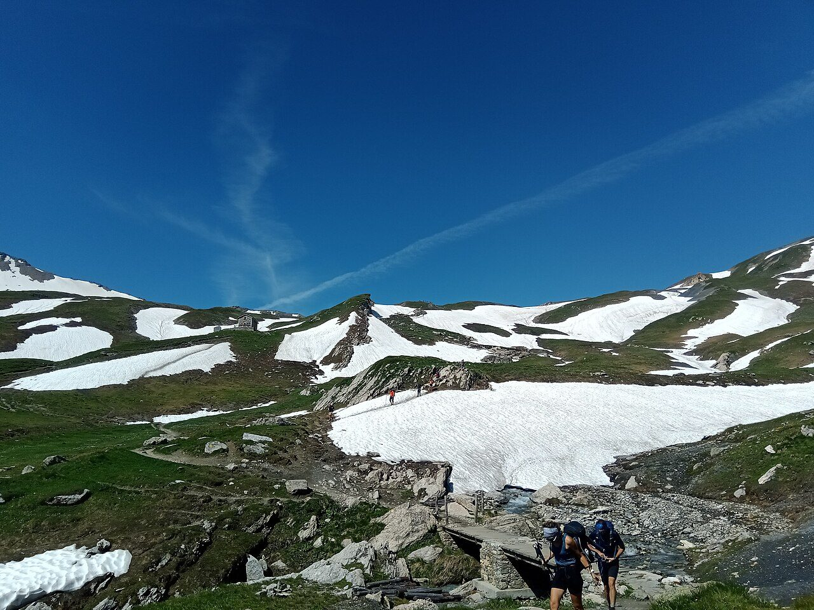
Photo: Rémih · Wikimedia Commons, CC BY-SA 4.0 Col de la Seigne
Two countries meet on the wind-scoured saddle of the Col de la Seigne, 2,516 metres, where France gives way to Italy. Behind lies the Vallée des Glaciers; ahead the Val Veny opens beneath the whole southern wall of Mont Blanc — the Aiguille Noire, the Peuterey ridge, glaciers spilling from the ice. It is the first full sight of the massif's Italian face.
-
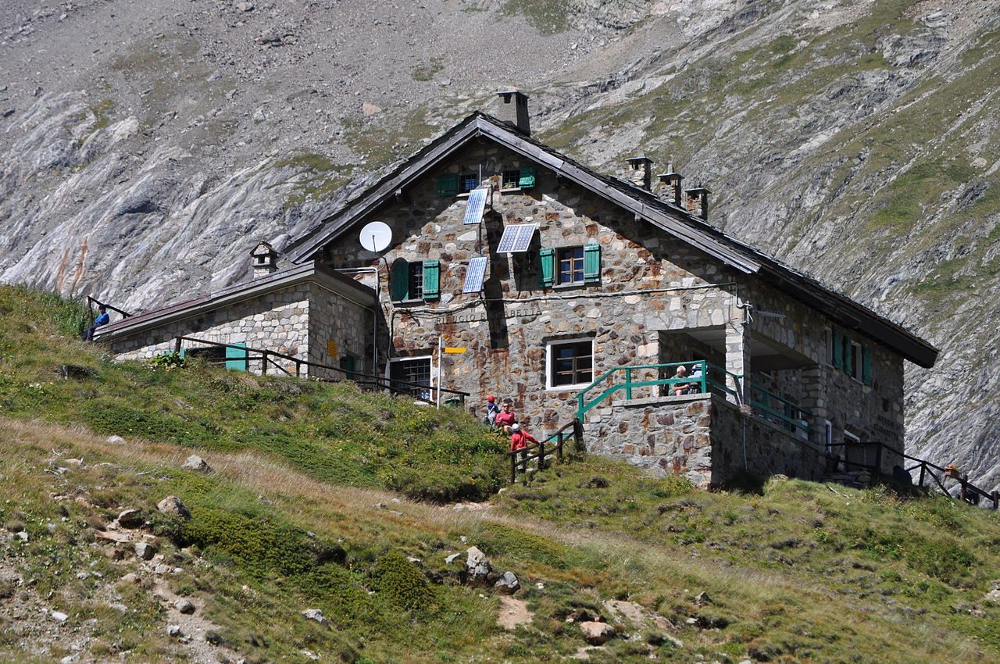
Photo: Riotforlife · Wikimedia Commons, CC BY-SA 3.0 Rifugio Elisabetta
Beneath the Glacier de la Lée Blanche, the Rifugio Elisabetta sits at 2,195 metres where meltwater braids across the flats of the upper Val Veny. Avalanche debris still litters the surrounding slopes into early summer. The refuge fills each evening with tired walkers from a dozen countries, all bound the same way round the massif.
-
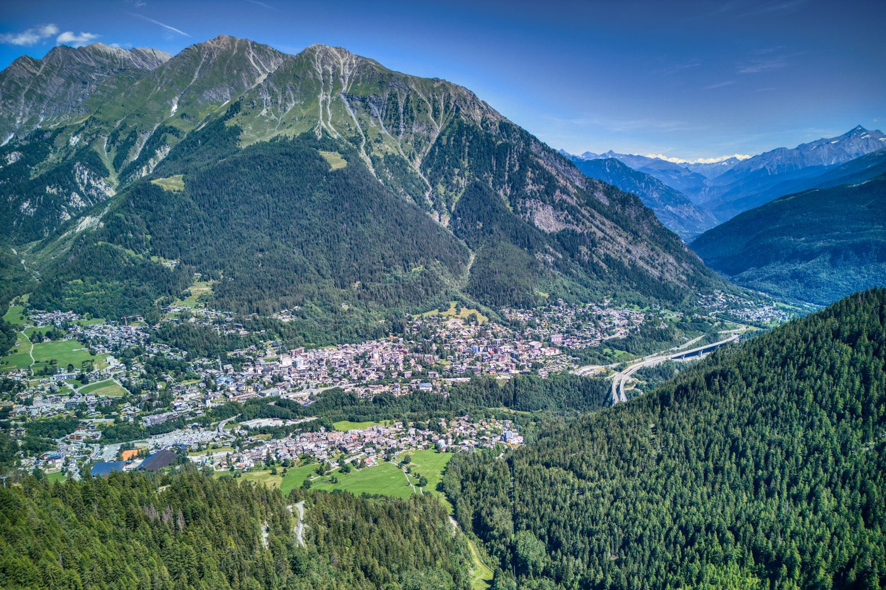
Photo: Hagai Agmon-Snir حچاي اچمون-سنير חגי אגמון-שניר · Wikipedia, CC BY-SA 4.0 Courmayeur
Down out of the high valley, cobbled streets and espresso bars mark Courmayeur, 1,224 metres — Italy's answer to Chamonix on the massif's sunny southern flank. The Via Roma carries the smell of coffee and cured ham. Many walkers rest a full day here, laundry done, legs recovering. Above the rooftops the Mont Blanc massif shows a wholly wilder face.
-
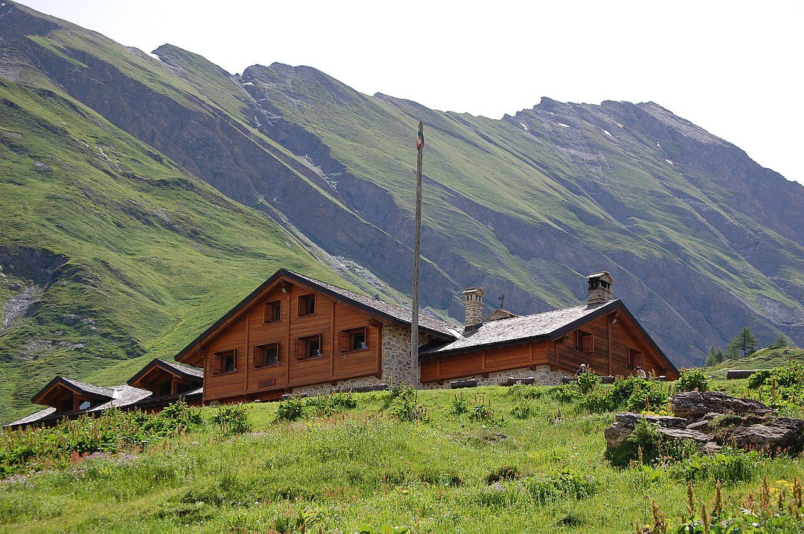
Photo: Cboon · Wikimedia Commons, CC BY-SA 3.0 Rifugio Bonatti
High on the balcony path above the Italian Val Ferret, the Rifugio Bonatti stands at 2,025 metres, opened in 1998 and named for Walter Bonatti, the alpinist who loved these mountains. Across the valley the Grandes Jorasses throw down a wall of rock and ice. Many consider the terrace here the finest view on the whole tour.
-
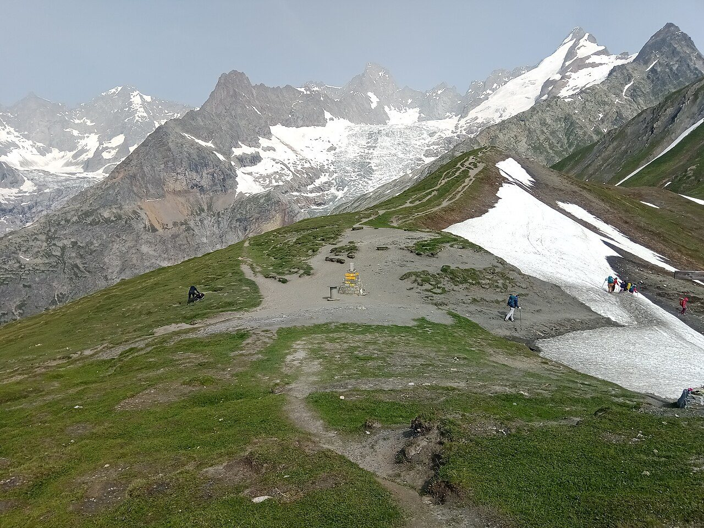
Photo: Rémih · Wikimedia Commons, CC BY-SA 4.0 Grand Col Ferret
The last long climb in Italy ends at the Grand Col Ferret, 2,537 metres, the highest point of the classic route and the frontier with Switzerland. Wind pours over the grassy saddle. Behind lies the Italian Val Ferret; ahead the Swiss one, greener and gentler, drops away toward distant chalets, with cowbells ringing somewhere below.
-
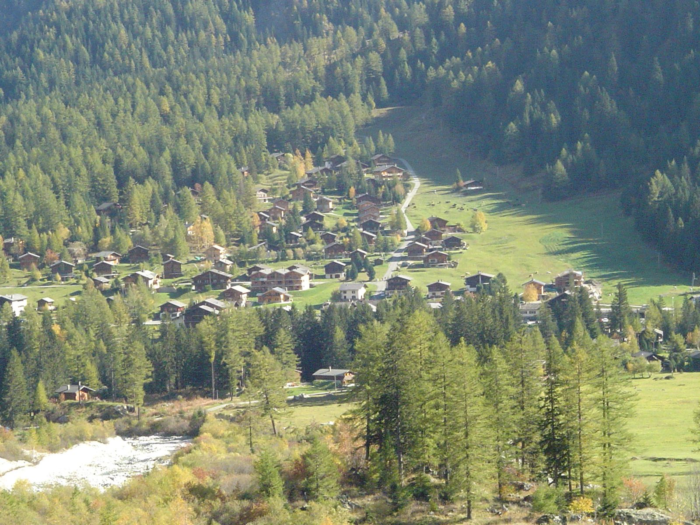
Photo: Aaquilino · Wikipedia, Public domain La Fouly
Swiss order arrives with La Fouly, a tidy village of dark-timber chalets at around 1,600 metres in the Val Ferret. Window boxes spill red geraniums; a glacier tongue hangs at the valley head. Cowbells and the clean smell of cut grass replace the high country's silence, and the hardest passes of the circuit now lie behind.
-
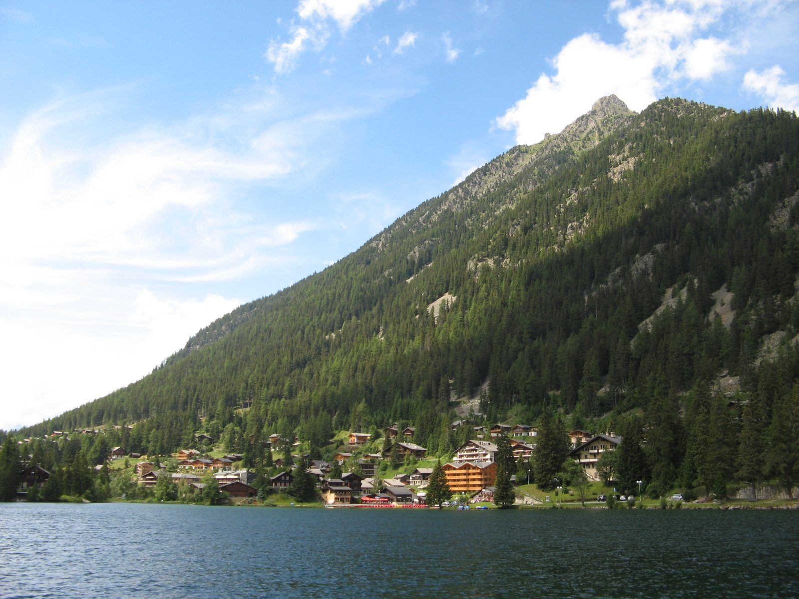
Photo: Olivier Bruchez Camera location46° 01′ 37.24″ N, 7° 07′ 05.11″ E View this and · Wikipedia, CC BY-SA 2.0 Champex-Lac
A still green lake mirrors the pines at Champex-Lac, 1,466 metres, a small resort wrapped around the water. After days of scree and glacier, the calm comes as a surprise. Rowing boats knock against a jetty, and the reflection holds the peaks upside down. From here the route splits — the hard Fenêtre d'Arpette variant or the gentler Bovine path.
-
Trient
Rose-coloured walls mark the little church at Trient, tucked in its valley at around 1,300 metres, reached after the long forest traverse down from the Col de la Forclaz. That pink stone is an unmistakable landmark among the dark firs. A café by the bridge serves rösti to hungry walkers. Ahead rises the final climb of the tour, back toward France.
-
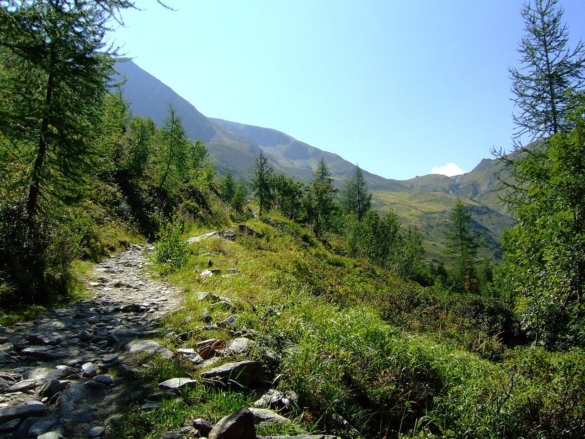
Photo: Dominicus Johannes Bergsma · Wikimedia Commons, CC BY-SA 3.0 Col de Balme
Grass gives way to a broad saddle at the Col de Balme, 2,191 metres, marking the return into France. The reward is sudden and total: the whole Chamonix valley opens ahead, Mont Blanc filling its head, glaciers pouring toward the town. An old refuge straddles the border line, and the circuit stands nearly complete.
-
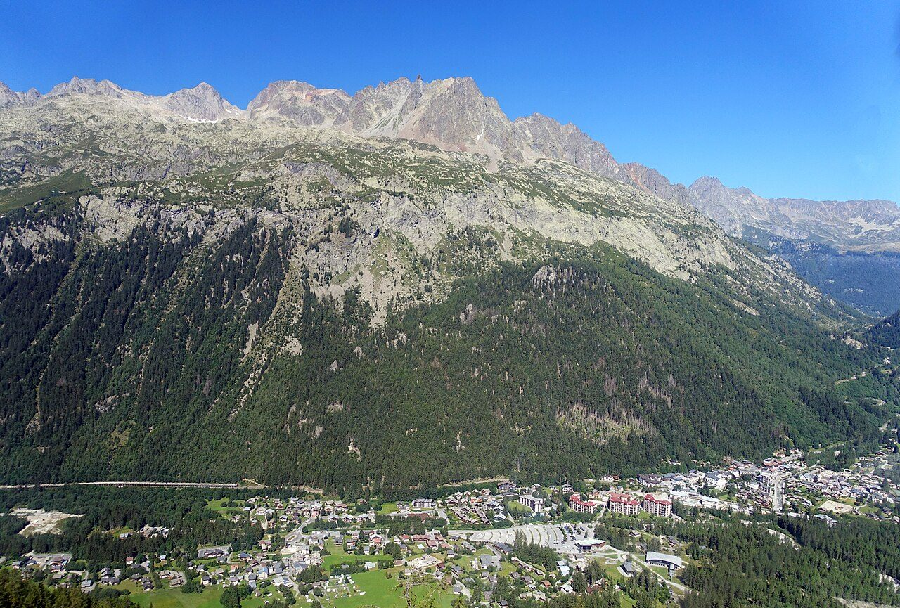
Photo: Tiia Monto · Wikimedia Commons, CC BY-SA 3.0 Argentière
Ski runs and larch woods lead down to Argentière, around 1,250 metres, at the foot of its own great glacier. The village hums with climbers bound for the Aiguille Verte and the Grands Montets. Above Tré-le-Champ, steel ladders bolted to the rock carry the path up past the Aiguillette d'Argentière. The valley road runs straight toward Chamonix, but the trail climbs once more.
-
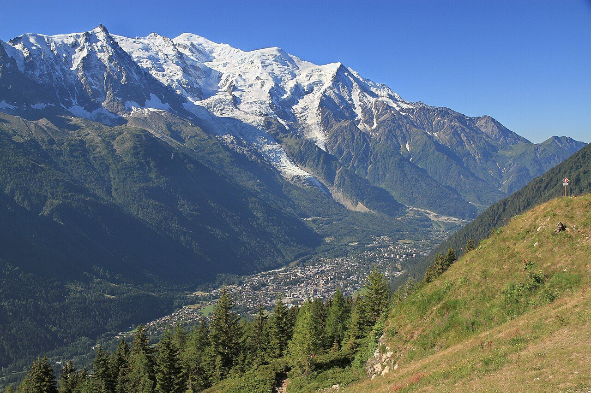
Photo: Ximonic, Simo Räsänen · Wikimedia Commons, CC BY-SA 3.0 La Flégère
The Grand Balcon Sud runs along the flank of the Aiguilles Rouges to La Flégère, 1,877 metres, where a cable car hauls up from the valley floor. Across the deep trench of the Arve, the entire Mont Blanc range stands face to face — Les Drus, the Mer de Glace, the summit itself. Most walkers stop here simply to stare.
-
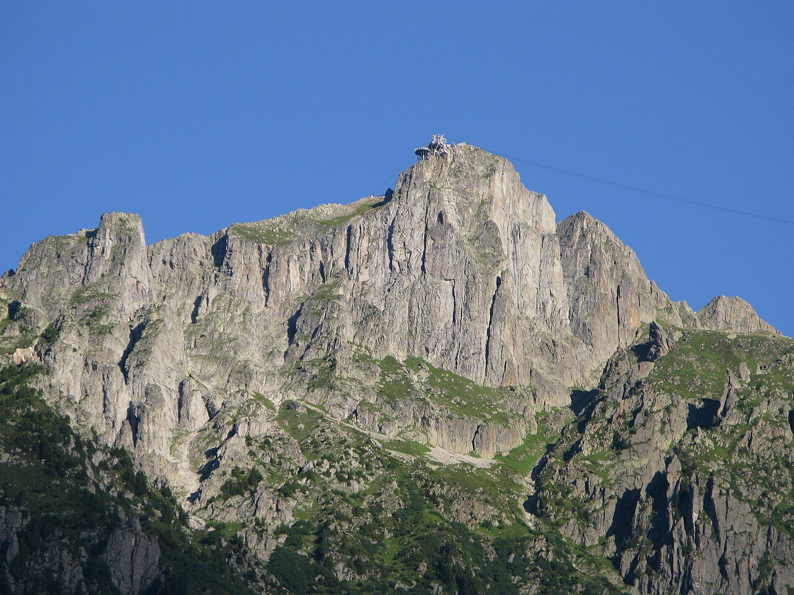
Photo: Franck Langlois · Wikimedia Commons, CC BY-SA 3.0 Le Brévent
Highest of the tour's western balconies, Le Brévent tops out at 2,525 metres, directly across the valley from Mont Blanc's summit. Nothing stands between the viewpoint and the whole massif — 4,808 metres of rock, snow and ice laid end to end in the afternoon light. It is the last great view before the trail turns downward toward Les Houches.
-
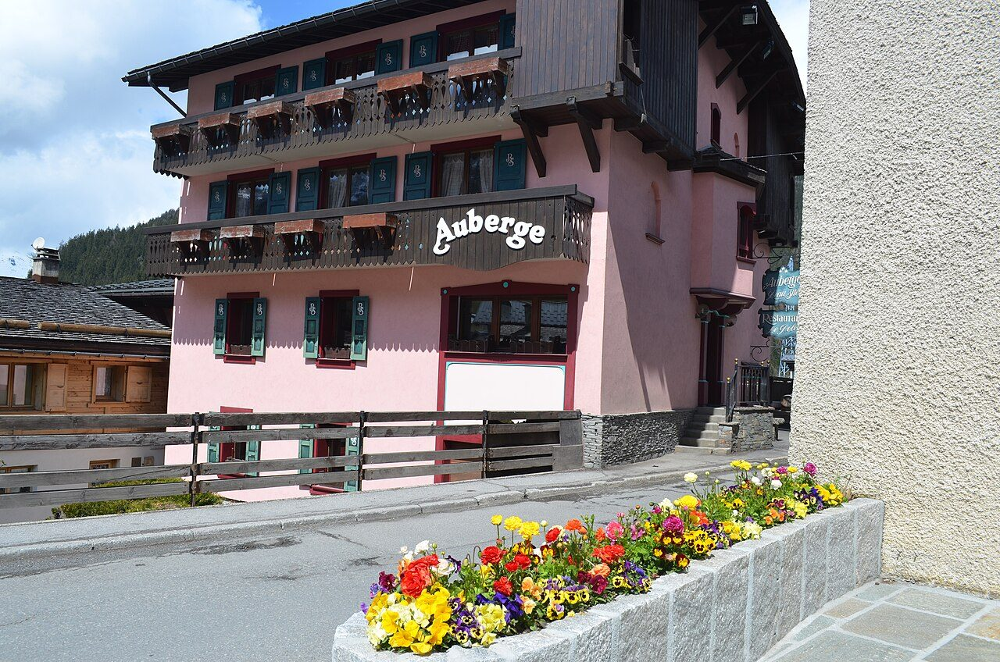
Photo: eGuide Travel · Wikimedia Commons, CC BY 2.0 Les Houches
Full circle. The path drops through forest to the rooftops of Les Houches, 1,007 metres, where the loop began. One hundred and seventy kilometres, three countries, and some ten thousand metres of climbing complete the circuit — the same mountain that watched the first steps now marks the last. The Tour du Mont Blanc ends where it started, a full ring walked around the roof of the Alps.
Walking the Tour du Mont Blanc
Your watch is already counting these steps. Watch Walks spends them on the Tour du Mont Blanc, all 170 km of it, and hands you each landmark as you reach it. There's no route recording, no account and no ads. The Inca Trail is free; this one is a one-time purchase with no subscription.
Other trails in Europe
- Camino de Santiago 780 km · Spain
- Length of Britain 1,745 km · United Kingdom
- GR20 180 km · Corsica (France)
- West Highland Way 154 km · Scotland
- Walker's Haute Route 180 km · France / Switzerland
- Kungsleden (The King's Trail) 440 km · Sweden